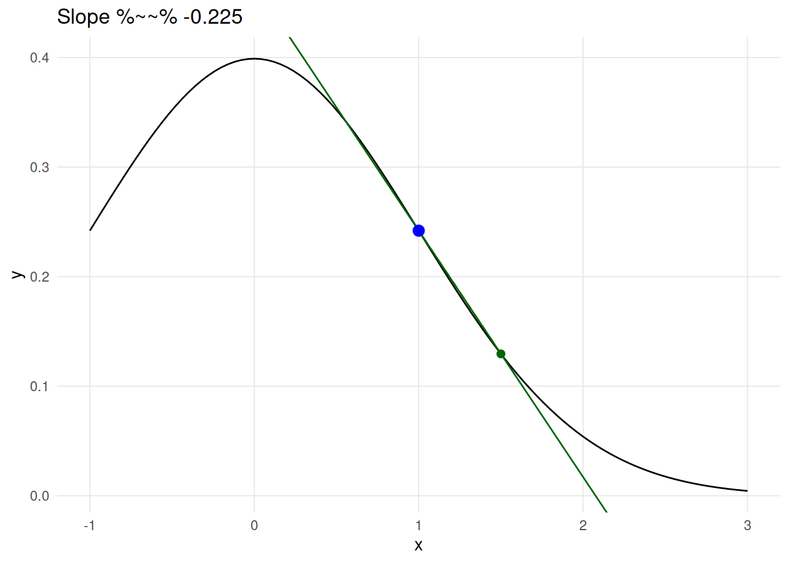
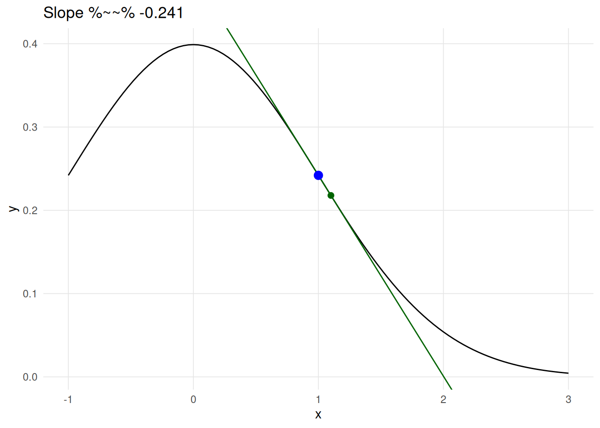
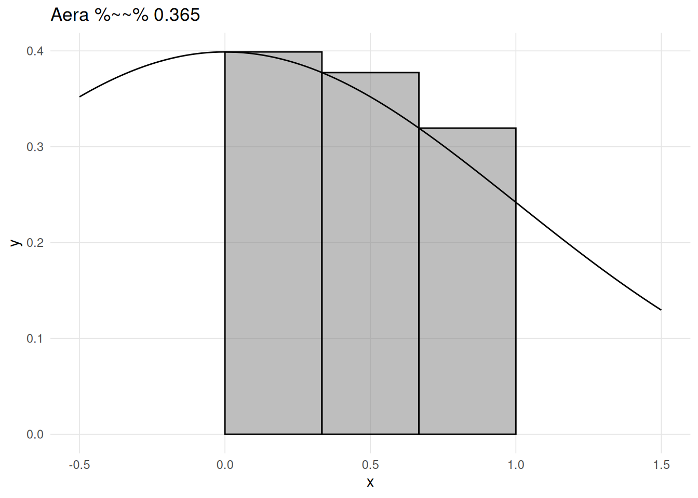
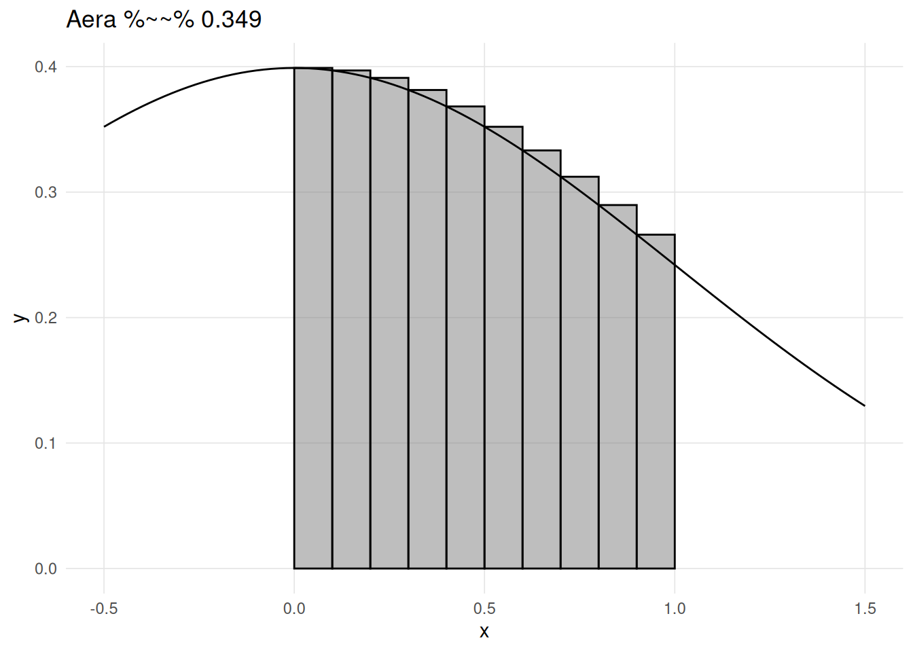
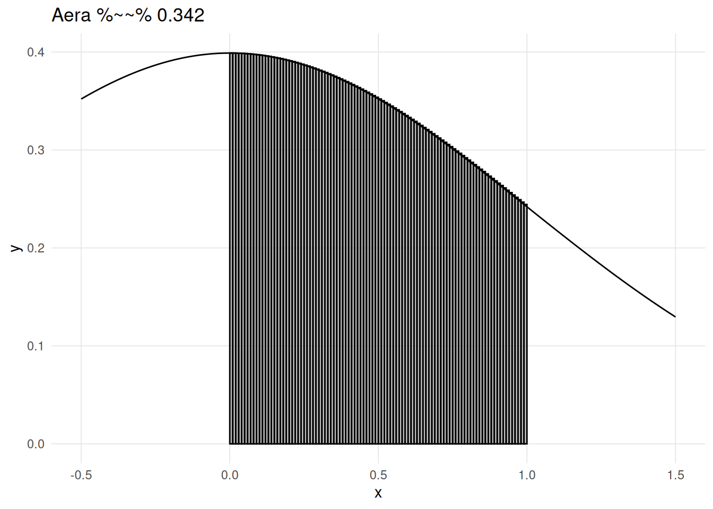

Attaching package: 'VisualStats'The following object is masked from 'package:stats':
simulate
Attaching package: 'VisualStats'The following object is masked from 'package:stats':
simulateAlthough calculus is not required prerequisite for learning statistics, having a basic understanding of the three core concepts from calculus can be helpful. This appendix provides some visualizations and Shiny applications to provide a crash course in calculus, specifically related to limits (useful for the Central Limit Theorem), derivatives (use for the ordinary least squares), and integrals (useful for probability distributions, p-values, and confidence intervals).
Isaac Newton and Gottfried Wilhelm Leibniz are credited for developing calculus independently of each other in the 17th century. While Newton developed calculus to solve problems in physics, Leibniz developed much of the notation we use today. Although calculus is now a significant part of mathematics, Newton in particular, developed calculus to solve problems in physics. In particular Newton wanted to understand the relationship between acceleration, velocity, and distance. Figure A.1 depicts acceleration (assuming constant acceleration of 1.0 m/s), velocity, and distance with time on the x-axis. Starting with acceleration, we can see that it is flat. With a constant acceleration of 1.0 m/s, we are stationary at time point zero, but for every second velocity increases by 1.0 m/s such that velocity is 2.0 m/s at time point two, 3.0 m/s at time point three, and etc. Distance is a bit trickier to calculate since velocity is constantly increasing. The distance traveled from time one to two is larger than from time zero to one since velocity has doubled. It turns out that with a linear increase in velocity results in a quadratic increase in distance.
df <- data.frame(
time = seq(from = 0, to = 5, by = 0.25),
acceleration = 1
)
df$velocity <- df$time * df$acceleration
df$distance <- df$time * df$velocity + ((df$acceleration * df$time) ^ 2) / 2
ggplot(df, aes(x = time)) +
geom_path(aes(y = acceleration), color = vs_palette_qual[1]) +
geom_point(aes(y = acceleration), color = vs_palette_qual[1]) +
geom_text(label = 'Acceleration', color = vs_palette_qual[1],
x = 5, y = max(df$acceleration), vjust = -1, hjust = 1) +
geom_path(aes(y = velocity), color = vs_palette_qual[2]) +
geom_point(aes(y = velocity), color = vs_palette_qual[2]) +
geom_text(label = 'Velocity', color = vs_palette_qual[2],
x = 5, y = max(df$velocity), vjust = -1, hjust = 1) +
geom_path(aes(y = distance), color = vs_palette_qual[3]) +
geom_point(aes(y = distance), color = vs_palette_qual[3]) +
geom_text(label = 'Distance', color = vs_palette_qual[3],
x = 5, y = max(df$distance), vjust = 0, hjust = 1.1) +
geom_segment(
x = 6, xend = 6, y = 0, yend = max(df$distance),
arrow = arrow(length = unit(0.5, "cm")),
linewidth = 2,
color = vs_palette_qual[4]
) +
geom_text(
label = 'Integrate',
x = 6, y = max(df$distance) / 2,
color = vs_palette_qual[4],
angle = 90,
vjust = -1
) +
geom_segment(
x = 5.5, xend = 5.5, y = max(df$distance), yend = 0,
arrow = arrow(length = unit(0.5, "cm")),
linewidth = 2,
color = vs_palette_qual[5]
) +
geom_text(
label = 'Derive',
x = 5.5, y = max(df$distance) / 2,
color = vs_palette_qual[5],
angle = 90,
vjust = -1
) +
ylab('Meters') + xlab('Time (seconds)') +
# xlim(c(0, 6)) +
scale_x_continuous(breaks = 0:5, limits = c(0,6)) +
theme_vs()Calculus provides the tools to define the relationship between these functions. In this particular example letting t stand for time, we have:
\[f_{acceleration}(t) = 1.0 \tag{A.1}\] \[f_{velocity}(t) = f_{acceleration}(t) * t \tag{A.2}\] \[f_{distance}(t) = f_{velocity}(t) * t + \frac{(f_{acceleration}(t) * t)^2}{2} \tag{A.3}\]
To go from \(f_{distance}(t)\) to \(f_{acceleration}(t)\) you take the derivative, going the other direction you integrate. The fundamental theorem of calculus states that differentiation and integration are inverse operations. This development has had a profound impact on mathematics, calculus, as well as many other fields. In the following sections we will describe in more detail through visualizations the parts of calculus that are most relevant to statistics.
Ancient Greek philosopher Zeno of Elea posed a number of paradoxical scenarios. Aristotle (1929) describe Zeno’s paradox of dichotomy as:
The first asserts the non-existence of motion on the ground that that which is in locomotion must arrive at the half-way stage before it arrives at the goal.
Stated another way, consider standing in front of a wall 1 meter away. You can walk half the distance to get to 0.5 meters away, Then again to arrive at 0.25 meters away. Given this scenario where you can constantly halve your distance to the wall, Zeno’s paradox would state that you would never reach the wall. Figure A.2 depicts the first 10 iterations. As we can see very quickly we get very close to zero, though never to zero, such that the lines are indistinguishable from on another. However, we know we do actually reach the wall. In calculus we call this the limit. For Zeno’s paradox of dichotomy, we would say the limit as the number of halving the distance approaches infinity is zero.
path <- c(1, rep(NA, 10))
for(i in 2:length(path)) {
path[i] <- path[i-1] / 2
}
ggplot(data.frame(x = path, y = 0)) +
geom_segment(aes(x = x, y = 0, xend = x, yend = 1)) +
theme_vs() +
theme(axis.text.y = element_blank()) +
xlab('Distance') + ylab('') +
scale_x_reverse()
Consider the \(\chi^2\) (chi-squared) distribution with 8 degrees of freedom (Figure A.3). The tail to the right never actually crosses (or touches) the line x = 0. However, from calculus we know that the limit of \(\chi^2\) as x approaches infinity is zero.
ggplot() +
stat_function(fun = dchisq, args = list(df = 8)) +
ylab('') + xlab('') +
xlim(c(0, 50)) +
theme_vs()We write this mathematically as:
\[ \lim_{x\to\infty} \chi^2_{df = 8}(x) = 0 \tag{A.4}\]
As discussed in the distributions section, a key feature of statistical distributions (e.g. normal, F, t, etc.) is that the area under the curve is one. However the length of the distribution line is infinite (in one direction for one tailed tests, in both directions for two tailed tests), but the area is finite. When this occurs we say that the function converges. With a \(\chi^2\) distribution as depicted in Figure A.3, test statistics do not need to be very large before the y-value is smaller than our numeric precision. For example, the y-value for a \(\chi^2\) distribution where x = 50 with 8 degrees of freedom \(1.8 \times 10^{-8}\).
dchisq(50, 8)[1] 1.808326e-08With regard to statistics, understanding the limit is important for the central limit theorem which states that as n (i.e. sample size) increases (approaches infinity), the sampling distribution will approximate the normal distribution. But the limit is also important to understand the concepts of derivatives and integrals, which are presented in the next two sections.
The derivative of a function describe the instantaneous rate of change at a certain point. Consider the example in Figure A.1, the derivative for the distance function describes velocity, and the derivative of the velocity function describes acceleration. Visually, the derivative is the slope of the line tangent the desired point.
derivative_plot(fun = normal_fun, x_value = 1, delta_x = 0.5)
derivative_plot(fun = normal_fun, x_value = 1, delta_x = 0.1)
Values where the first derivative (i.e. slope) is zero provide a way of finding local minumums and maximums.
f <- expression(x^2 - 2 * x + x )
d <- D(f, "x")
first_deriv <- uniroot(function(x) { eval(D(f, "x"))}, lower = -3, upper = 3)
ggplot(data.frame()) +
geom_function(fun = function(x) { eval(f) }) +
geom_hline(yintercept = eval(f, envir = list(x = first_deriv$root)), linetype = 2) +
geom_point(x = 1, y = -1, size = 3, color = 'blue') +
xlim(c(-1, 3)) +
xlab('x') + ylab('f(x)') +
theme_vs()f <- expression(-x^3 - 3 * x^2 + 2 )
df <- D(f, "x")
f1 <- function(x) { -(3 * x^2 + 3 * (2 * x)) }
uniroot(f1, lower = -3, upper = 3, tol = 1e-9)
ggplot(data.frame()) +
geom_function(fun = function(x) { -x^3 - 3 * x^2 + 2 }) +
# geom_hline(yintercept = -1, linetype = 2) +
# geom_point(x = 1, y = -1, size = 3, color = 'blue') +
xlim(c(-3.2, 1.2)) +
xlab('x') + ylab('f(x)') +
theme_vs()integral_plot(fun = normal_fun, xmin = 0, xmax = 1, n = 3)
integral_plot(fun = normal_fun, xmin = 0, xmax = 1, n = 10)
integral_plot(fun = normal_fun, xmin = 0, xmax = 1, n = 100)